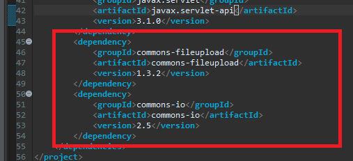
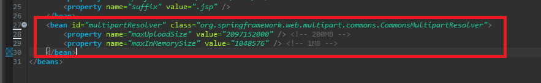
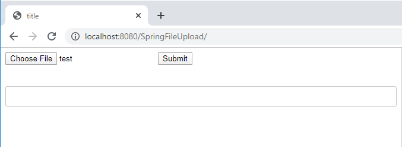
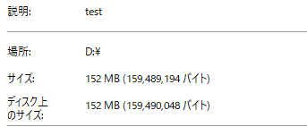
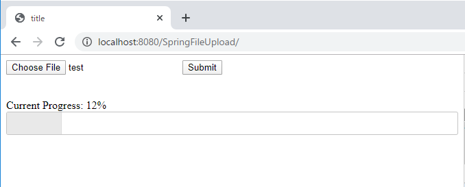
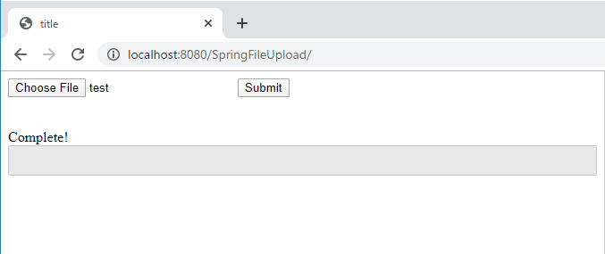
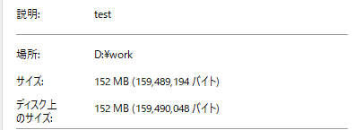

[Java] Spring環境でファイルアップロード(プログレスバーでファイルアップロード状態を表示する方法)する方法
こんにちは。明月です。
この投稿はJavaのSpring環境でファイルアップロード(プログレスバーでファイルアップロード状態を表示する方法)する方法に関する説明です。
ウェブサービスでアップロードすることだと思えばformの要素でenctypeをmultipart/form-dataに設定してヘッダーにバウンダリーを設定し、アップロードすることをサーバ側でバウンダリーデータを受け取ったらアップロードが完了します。
ウェブサービスのアップロードの仕様です。
でもSpringフレームワークはこの単純なアップロードロジックが少し複雑になっています。そのため、よく要約をしていないとアップロードを実装するたびに、忘れるか迷う時があります。
以前、Spring環境を構築する方法に関して説明したことがあります。
link - [Java] EclipseでSpring web frameworkを利用してウェブサービスプロジェクトを立ち上がる方法
先にファイルアップロードを実装するためにはmavenレポジトリから二つのライブラリをダウンロードして連携しなければならないです。
<dependency>
<groupId>commons-fileupload</groupId>
<artifactId>commons-fileupload</artifactId>
<version>1.3.2</version>
</dependency>
<dependency>
<groupId>commons-io</groupId>
<artifactId>commons-io</artifactId>
<version>2.5</version>
</dependency>

そしてmvc-config.xmlでアップロードする時ファイルサイズのリミット設定をしなければならないです。
<bean id="multipartResolver"
class="org.springframework.web.multipart.commons.CommonsMultipartResolver">
<!-- max upload size in bytes -->
<property name="maxUploadSize" value="2097152000" /> <!-- 200MB -->
<!-- max size of file in memory (in bytes) -->
<property name="maxInMemorySize" value="1048576" /> <!-- 1MB -->
</bean>

そのあと、ファイルアップロードするウェブページ(jsp)を生成しましょう。
<%@ page language="java" contentType="text/html; charset=UTF-8" pageEncoding="UTF-8"%>
<!DOCTYPE html>
<html>
<head>
<title>title</title>
<!-- jquery cdn プログレスバーを使うように参照する。 -->
<link rel="stylesheet" href="https://code.jquery.com/ui/1.12.1/themes/base/jquery-ui.css">
</head>
<body>
<!-- ファイルアップロードするデータを設定するフォーム。enctypeは「multipart/form-data」だ。 -->
<form enctype="multipart/form-data">
<input type="file" name="data">
<input type="submit">
</form>
<br />
<br />
<!-- ファイルアップロードする状況を表示するプログレスバーラベル -->
<div class="progress-label"></div>
<!-- ファイルアップロードする状況を表示するプログレスバー -->
<div id="progressbar"></div>
<!-- jquery cdn -->
<script src="https://code.jquery.com/jquery-3.4.1.min.js"></script>
<!-- フォームを非同期に転送するライブラリcdn -->
<script src="https://cdnjs.cloudflare.com/ajax/libs/jquery.form/4.2.2/jquery.form.min.js"></script>
<!-- プログレスバーのためのuiライブラリ -->
<script src="https://code.jquery.com/ui/1.12.1/jquery-ui.min.js"></script>
<script>
// document onloadイベント
$(function() {
// プログレスバー要素を取得
var progressbar = $("#progressbar");
// プログレスバーラベル要素を取得
var progressLabel = $(".progress-label");
// プログレスバーを設定
progressbar.progressbar({
value: true,
// プログレスバーのデータが変更される時に呼ばれるイベント
change: function() {
// プログレスバーのラベルに状況を表示する。
progressLabel.text("Current Progress: " + progressbar.progressbar("value") + "%");
},
// プログレスバーのデータが完了, valueが100になると呼ばれるイベント
complete: function() {
// プログレスバーのラベルに環境の文言を表示する。
progressLabel.text("Complete!");
// フォーカスを変更
$(".ui-dialog button").last().trigger("focus");
}
});
// フォームを非同期でsubmitする。
$('form').ajaxForm({
// Requestはupload.htmlだ。
url: "upload.html",
// メソッドタイプはPOST
type: "POST",
// Submitする前にイベント
beforeSubmit: function(arr, $form, options) {
// プログレスバーに0を設定
progressbar.progressbar( "value", 0 );
},
// Submitの状況で呼ばれるイベント
uploadProgress: function(event, position, total, percentComplete) {
// プログレスバーにデータ数値を設定
progressbar.progressbar( "value", percentComplete );
},
// Submitが完了する時に呼ばれるイベント
success: function(text, status, xhr, element) {
// プログレスバーに100を設定
progressbar.progressbar( "value", 100 );
}
});
});
</script>
</body>
</html>
そのあと、サーバ側のContollerを作成しましょう。
package controller;
import java.io.File;
import java.io.IOException;
import java.io.InputStream;
import javax.servlet.http.HttpServletRequest;
import javax.servlet.http.HttpServletResponse;
import javax.servlet.http.HttpSession;
import org.apache.commons.io.FileUtils;
import org.springframework.stereotype.Controller;
import org.springframework.ui.ModelMap;
import org.springframework.web.bind.annotation.RequestMapping;
import org.springframework.web.bind.annotation.RequestMethod;
import org.springframework.web.bind.annotation.RequestParam;
import org.springframework.web.multipart.MultipartFile;
// SpringのController設定
@Controller
public class MainController {
// Requestマッピング設定
@RequestMapping(value = "/index.html")
// アップロードページをResponseするための関数
public String index(ModelMap modelmap, HttpSession session, HttpServletRequest req, HttpServletResponse res) {
// index.jspが呼ばれる。
return "index";
}
// Requestマッピング設定、メソッドはPOSTタイプ
@RequestMapping(value = "/upload.html", method = RequestMethod.POST)
// ファイルアップロードデータを受け取るようには「MultipartFile」をパラメータに設定する。
public void upload(@RequestParam("data") MultipartFile multipartFile, HttpSession session, HttpServletRequest req, HttpServletResponse res) {
// ダウンロードするパスは「d:\work」フォルダだ。
File targetFile = new File("d:\\work\\" + multipartFile.getOriginalFilename());
try {
// アップロードされたファイルストリームを取得する。
InputStream fileStream = multipartFile.getInputStream();
// ストリームからファイルを作成する。
FileUtils.copyInputStreamToFile(fileStream, targetFile);
} catch (IOException e) {
FileUtils.deleteQuietly(targetFile);
e.printStackTrace();
}
}
}
ここまで作成したらuploadする準備は完了しました。
そうすれば起動しましょう。

アップロードする前のindex.htmlの状況です。

アップロードしようと思うファイルは150mbのサイズのバイナリデータです。
アップロードしましょう。

プログレスバーが動くことを確認できます。

アップロードが完了しました。

指定された「d:\work」フォルダにファイルが格納されたことを確認できます。
ここまでJavaのSpring環境でファイルアップロード(プログレスバーでファイルアップロード状態を表示する方法)する方法に関する説明でした。
ご不明なところや間違いところがあればコメントしてください。
- [Java] WebSocketでチャット履歴をローディングする方法2021/06/15 18:34:45
- [Java] WebSocketを利用してユーザ(サイト運用者)が他のユーザとチャットする方法2021/06/15 17:20:08
- [Java] HttpConnectionを利用してウェブページを取得する方法2020/05/20 23:53:24
- [Java] Jsoupを利用してXMLファイル(HTML)を扱う方法2020/05/19 19:32:21
- [Java] 日付フォーマット(SimpleDateFormat)を使う方法2020/03/25 00:36:53
- [Java] サーブレット(Servlet)の環境でファイルアップロード(プログレスバーでファイルアップロード状態を表示する方法)する方法2020/03/24 00:48:21
- [Java] Spring環境でファイルアップロード(プログレスバーでファイルアップロード状態を表示する方法)する方法2020/03/22 23:15:12
- [Java] FTPに接続してファイルをダウンロード、アップロードする方法(FTPClient)2020/03/20 02:44:36
- [Java] JSPのSpring環境でschedulerのcronを使う方法2020/03/18 00:24:32
- [Java] POIを利用してExcelを扱う方法2020/03/17 01:48:00
- [Java] PDFを出力する方法(itextpdf)2020/03/13 00:47:31
- [Java] ログライブラリ(log4j)を使う方法2020/03/12 00:54:39
- [Java] Jsonタイプのデータを使う方法(Gsonライブラリ)2020/03/11 00:30:15
- [Java] Base64をエンコード、デコードする方法2020/03/09 10:24:01
- [Javascript ] WebのFull calendar(スケジュールカレンダー)の使い方法2021/07/15 21:35:36
- [Java] 56. Web serviceのサーブレット(Servlet)で初期化作業(properties設定)2021/07/02 17:10:36
- [Java] 55. Spring frameworkに文字化けを解決する方法(Encoding設定)2021/06/30 16:37:16
- [Java] 54. Spring frameworkでWeb filterを使う方法2021/06/29 18:25:12
- [Java] 53. ウェブサービス(Web service)でエラーページを処理する方法2021/06/25 13:35:54
- [Design pattern] 1-3. ファクトリメソッドパターン(Factory method pattern)2021/06/23 19:45:37
- [Java] WebSocketでチャット履歴をローディングする方法2021/06/15 18:34:45
- [Java] WebSocketを利用してユーザ(サイト運用者)が他のユーザとチャットする方法2021/06/15 17:20:08
- [Design pattern] 1-2. ビルダーパターン(Builder pattern)2021/06/11 19:06:28
- [Design pattern] 1-1. シングルトンパターン(Singleton pattern)2021/06/09 19:40:05
- [Design Pattern] デザインパターンの紹介2021/06/08 20:42:36
- [Tools] Dbeaver(無料Sql queryブラウザツール)2021/04/28 18:26:49
- [Bootstrap] HTMLデザインのフレームワークのBootstrap紹介2020/07/30 19:06:36
- [Python] メール(smtplib)を送信する方法2020/07/27 18:38:43
- [Python] HttpConnection(requestsモジュール)でウェブサーバーで接続する方法2020/07/20 14:41:51